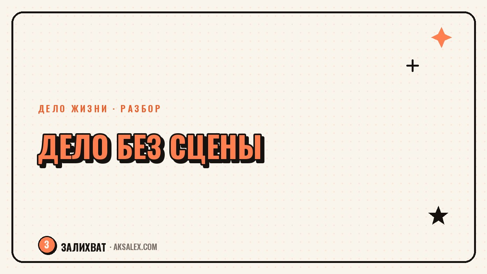

Как заниматься любимым делом, не будучи публичным

Почти вся современная система поиска себя построена на одном допущении: нашёл своё дело - заводи блог, снимай лицо, рассказывай историю. Но что, если мысль о камере вызывает у тебя не вдохновение, а желание закрыть ноутбук и забыть про идею вовсе? Хорошая новость - публичность не единственный путь. Дело может расти и без того, чтобы ты становилась лицом бренда, и в этой статье разберём, какие форматы реально работают для тех, кому важнее результат, чем узнаваемость.
Почему идея «нужен блог» преследует даже тех, кто не хочет быть на виду
Соцсети сделали путь предпринимателя видимым: ты листаешь ленту и видишь человека, который снял видео про запуск своего дела, собрал подписчиков и получил первых клиентов через блог. Этот путь реален, но он далеко не единственный - лишь самый заметный, потому что люди, которые выбрали его, по определению на виду. Те, кто построил дело без публичности, редко рассказывают об этом в сторис, и их опыт остаётся в тени.
Отсюда возникает искажённое чувство, будто без личного блога дело обречено оставаться маленьким. На практике огромная часть устойчивого малого бизнеса растёт через сарафанное радио, рекомендации и партнёрства, а не через известность владельца. Важно отделить задачу «найти клиентов» от задачи «стать медийной персоной» - это разные цели.
Вопросы, которые помогают разделить эти задачи
- Что именно меня пугает - камера, лицо в кадре, или сама идея рассказывать о себе
- Нужны ли мне подписчики или мне нужны клиенты и заказы
- Есть ли примеры людей в моей сфере, кто растёт без личного блога
- Что я готова делать публично хотя бы иногда, а что категорически нет
Форматы продвижения без лица в кадре
Публичность - это не бинарный переключатель, а шкала. На одном конце - ежедневные сторис с лицом, на другом - полная анонимность. Между ними десятки рабочих вариантов: текстовый блог без фото, канал с закадровым голосом, экспертные статьи под своим именем без видео, профиль на площадках с отзывами и портфолио вместо личного контента.
Для многих ниш работает ставка на витрину вместо личности: сайт-портфолио, карточки на маркетплейсе услуг, каталог мастеров. Клиент выбирает не по симпатии к блогеру, а по качеству работ и отзывам - это справедливо для шитья, столярки, репетиторства, бухгалтерии.
Я шью на заказ десять лет и панически боюсь камеры. Вместо блога сделала простой сайт с фотографиями готовых работ и отзывами клиентов, а новых заказчиков беру через рекомендации и площадки для мастеров. Ни разу не записала видео с собой - и это не помешало мне выйти на постоянный поток заказов.
Сарафанное радио и партнёрства как альтернатива блогу
Рекомендации работают не хуже рекламы, а часто лучше, потому что человек, который уже доволен результатом, продаёт за тебя убедительнее любого поста. Чтобы сарафанное радио заработало, важно сделать так, чтобы людям было легко тебя рекомендовать: понятное название дела, контакты, которые легко передать, и небольшой бонус или скидка для того, кто привёл знакомого.
Партнёрства с другими специалистами тоже заменяют узнаваемость. Флорист может договориться с фотографом, репетитор - с образовательным центром, мастер по ремонту - с риелтором. Такие связки приводят клиентов стабильно без публикаций в соцсетях.
| Формат | Нужна ли публичность |
|---|---|
| Сайт-портфолио | Нет, фото работ без лица |
| Площадки и каталоги услуг | Нет, профиль и отзывы |
| Партнёрства со смежными специалистами | Нет, личные договорённости |
| Текстовый блог без фото | Частично, только текст |
| Личный блог с лицом в кадре | Да, высокая |
Где публичность всё-таки придётся включить - и как сделать это терпимо
Есть ниши, где совсем без публичного присутствия трудно: инфопродукты и наставничество почти всегда продаются через доверие к человеку. Если твоё дело из таких, не обязательно сразу нырять в видео - можно начать с малого: текстовое интервью, пост с историей без фото, голосовая запись.
Хорошая стратегия - дозировать публичность под свой уровень комфорта, а не подгонять себя под чужой темп. Кто-то начинает с анонимного канала и постепенно открывает лицо. Кто-то навсегда остаётся за текстом и голосом, и это тоже устойчивая модель, если она приносит результат.
Мягкие шаги к публичности, если она всё же нужна
- Начать с текста без фото - статьи, посты, карточки
- Попробовать голосовой формат: подкаст, аудиосообщения, закадровая озвучка
- Показывать процесс работы и результат, а не лицо
- Дать интервью кому-то другому вместо того, чтобы вести канал самостоятельно
- Ограничить публичность одной площадкой, а не распыляться на все сразу
Как не спутать страх публичности с нежеланием действовать вообще
Важно честно себе ответить: тебя останавливает именно публичность или страх публичности стал удобным объяснением, почему дело до сих пор не двигается. Если за словами «я не хочу быть публичной» прячется страх отказа, критики или неудачи в целом, непубличные форматы не решат проблему - дело всё равно будет стоять на месте, но уже по другой причине.
Проверить это легко: представь, что публичность исчезла как проблема - готова ли ты в этом случае сразу делать первые шаги: искать клиентов, собирать портфолио, договариваться о партнёрствах. Если да - дело именно в форме подачи, и непубличные форматы тебе подойдут. Если нет и находятся новые причины отложить - стоит отдельно разобраться со страхом начала, а не с камерой.
Частые вопросы
Можно ли построить дело жизни без личного блога
Да, многие устойчивые дела растут через сарафанное радио, партнёрства и площадки с портфолио, а не через личную известность владельца. Важно понять, нужны тебе подписчики или именно клиенты - это разные цели.
Какие форматы продвижения подходят, если боишься камеры
Текстовый блог без фото, сайт-портфолио, профиль на площадках с отзывами, голосовые форматы без видео. Публичность - это шкала, а не бинарный выбор между полной анонимностью и ежедневными сторис.
Как найти клиентов без блога и соцсетей
Через рекомендации, партнёрства со смежными специалистами и каталоги услуг в своей нише. Чтобы сарафанное радио заработало, важно сделать себя легко рекомендуемой: понятное название, контакты и небольшой бонус за рекомендацию.
Что делать, если ниша требует хоть какой-то публичности
Дозируй её под свой уровень комфорта: начни с текста без фото или голосовой записи, постепенно увеличивая открытость. Не обязательно сразу переходить к видео с лицом в кадре - можно двигаться маленькими и терпимыми шагами.
Как понять, что дело стоит не из-за страха публичности, а по другой причине
Представь, что проблема публичности исчезла, и спроси себя, готова ли ты сразу действовать - искать клиентов, собирать портфолио. Если находятся новые причины откладывать, дело скорее всего в страхе начала, а не в камере.
Раз тема оказалась полезной, вот что почитать следующим. Разбираем, как устроен вечнозелёный контент для блога: какие темы работают годами и как собрать такие статьи с помощью нейросетей.
Читать статью →а не вручную